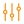

<div
  *ngIf="channelsPage"
  class="channel-search channel-filter"
  (click)="toggleMenu($event)">
  
  <span translate>Channels.from</span>
  <div class="channel-search__dropdown">
    <input
      type="text"
      placeholder="{{allSelected ? ('Channels.allNetworks'| translate) : activeChannels.length +
      ' ' + ('Channels.selected' | translate)}}">
    <i class="icon-arrow-down hoverable"></i>
  </div>
</div>

<div
  *ngIf="!channelsPage"
  class="channel-search"
  (click)="toggleMenu($event)">
    <span translate>ChannelsFilter.channels</span>
    <div class="channel-search__dropdown">
      <input
        type="text"
        placeholder="{{allSelected ? ('ChannelsFilter.allChannels'| translate) : activeChannels.length + ' ' +
        ('ChannelsFilter.selected' | translate)}}">
      <i class="icon-arrow-down hoverable"></i>
    </div>
</div>
<div
  class="channel-search__menu"
  [ngClass]="{'channel-search__menu--visible': channelMenuIsActive}">
    <sl-channels-filter
      [channels]="channels"
      [channelsPage]="channelsPage"
      (confirm)="changeChannels($event)"
      (clickOutside)="onClickedOutside($event)">
    </sl-channels-filter>
</div>
